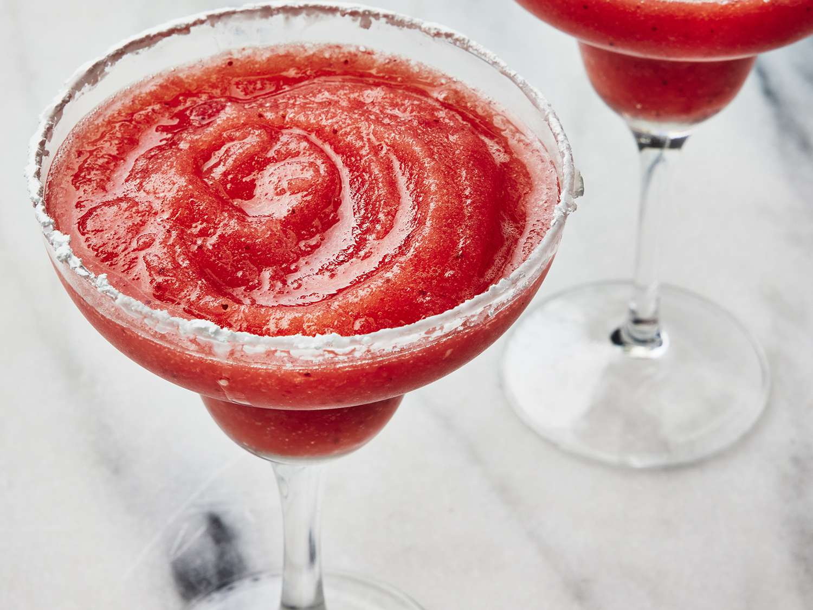

Do not use ice, only use frozen strawberry.
Ingredients
- 1 tsp sea salt flakes
- 400g frozen strawberries
- 120ml tequila
- 75ml triple sec
- 1 lime, juiced
Instructions
- Tip the sea salt onto a saucer.
- Dampen the rims of two margarita glasses.
- Turn the glass upside down in the salt and twist to coat the rim.
- Add all remaining ingredients to a blender and blitz until smooth.
- Pour into glasses and serve immediately.